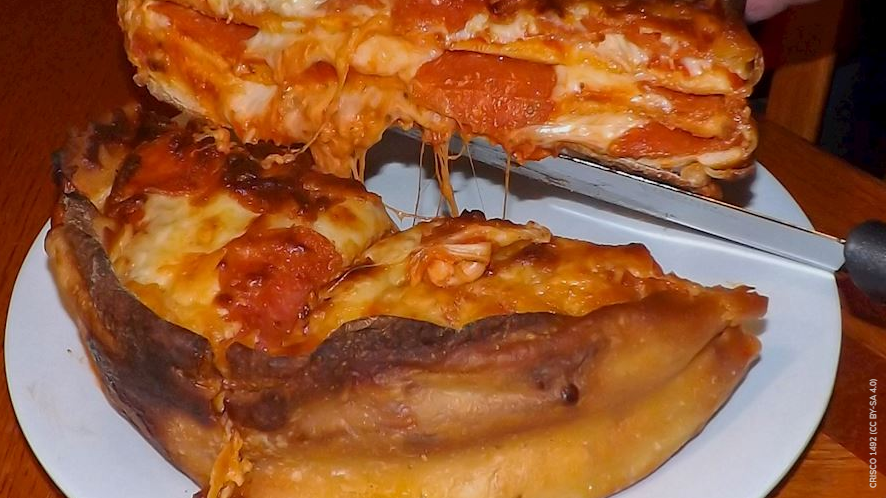

Apizza
Apizza (pronounced "ah-beets") is a popular type of pizza in New Haven, Connecticut characterized by its prolonged baking time in extremely hot coal ovens and the high moisture content of the dough. Due to these two defining characteristics, the result is a pizza with a thin, black, crispy, and charred crust that might appear to be burnt, but instead has a deliciously chewy texture and flavor.
Pizza Cake
The infamous pizza cake came to life in April of 2014 when a Canadian-based chain Boston Pizza started a campaign called Pizza Game Changers, where the public was called in to vote on the next big thing when it comes to pizza-related products.

Pizza Ortolana
The name of this classic Italian pizza translates to greengrocer’s pizza. It consists of a basic pizza dough which is smeared with tomato sauce, topped with mozzarella and grilled slices of eggplant and zucchini, then baked. Lastly, pizza ortolana is typically drizzled with olive oil and topped with fresh basil.
Pizza Rustica
Pizza rustica or pizzagaina is a large Italian pizza pie consisting of a pastry-like crust that goes both on top and on the bottom, and in between the crust it holds ingredients such as salami, ham, prosciutto, eggs, and Italian cheeses such as mozzarella, ricotta, Pecorino Romano, and Parmigiano Reggiano.